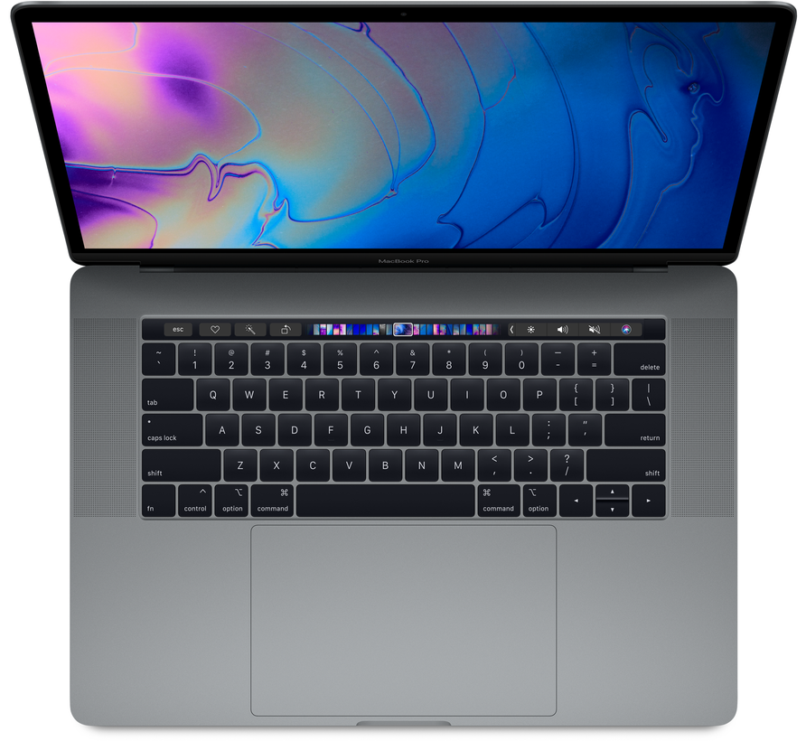
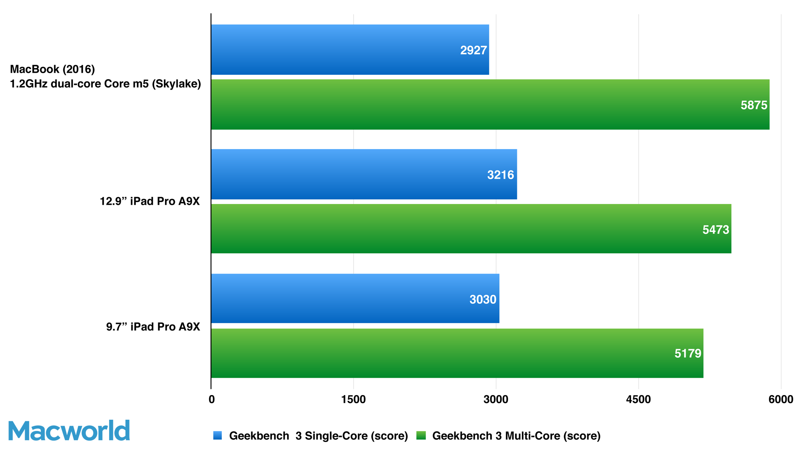
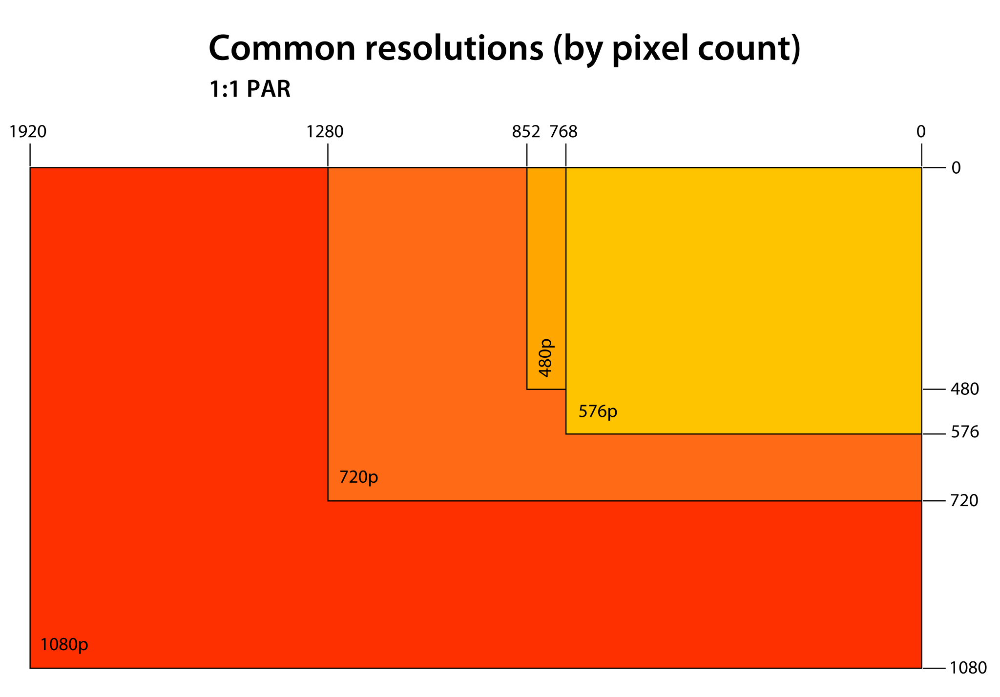
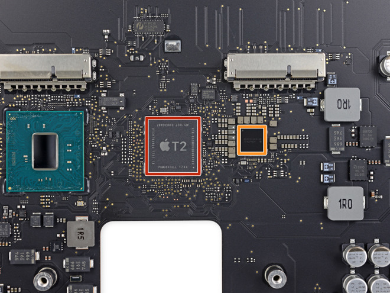
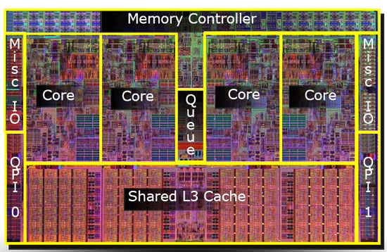
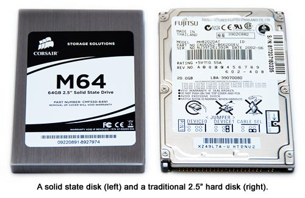
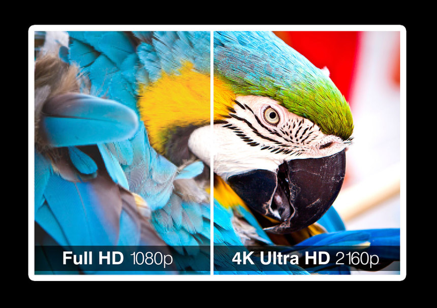
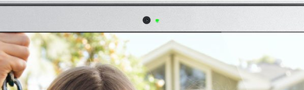
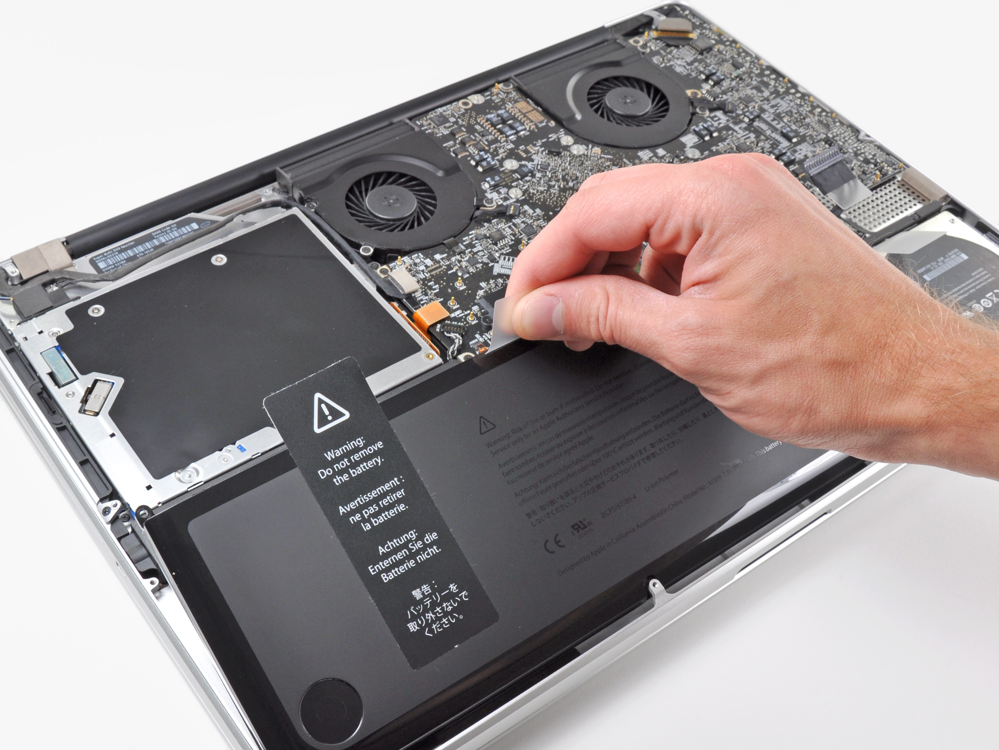

Computer Systems Assignment
Keshav
Compare and Contrast Systems
| Category | Macbook | Macbook Air | Macbook Pro |
|---|---|---|---|
| Price | $1200 | $1400 | $2000 |
| Display | 12-inch (diagonal) | 13.3-inch (diagonal) | Retina 13.3-inch (diagonal) |
| Resolution | 2304 X 1440, 226-ppi | 2560 X 1600, 227-ppi | 2560 X 1600. Native resolution available on external monitors |
| Processor | 1.2GHz Dual Core Intel Core i5, 4MB l3 cache | 1.6GHz Dual Core Intel Core i5, 4MB l3 cache | 2.3GHz Dual Core Intel Core i5, boost up to 4GHz, with 64MB eDRAM |
| Storage | 512GB SSD | 1.5TB SSD | 2TB SSD |
| RAM | 8GB at 1866MHz | 8GB at 2133MHz | 16GB at 2133MHz |
| Ports | 1 USB-C, 3.5mm Headphone-Jack, VGA/HDMI support w/ adapter | 2 USB-C, 3.5mm Headphone-Jack, VGA/HDMI support w/ adapter | 4 USB-C, 3.5mm Headphone-Jack, VGA/HDMI support w/ adapter |
| Dimensions | 1.31cm height, 28.05cm width, 19.65cm depth, 2.03lb | 1.56cm height, 30.41cm width, 21.24cm depth, 2.75lb | 1.49cm height, 30.41cm width, 21.24cm depth, 3lb |
| Graphics | Intel HD Graphics 615, dual display, up to 4096 X 2304 on external display | Intel UHD graphics 617, Supports external USBC graphics processors | Intel Iris Plus Graphics 655 |
| Wireless | 802.11ac Wifi compatible with a/b/g/n, 4.2 bluetooth | Ditto | Ditto |
| Camera | 480p front-facing | 720p front-facing | 720p front-facing |
| Battery | 10-12 hours depending on usage, 30 days standby time, 41.4watt-hour lithium polymer, 30W USB-C | 12-13 hours depending on usage, 30 days standby time, 50.3watt-hour lithium polymer, 30W USB-C | 10-12 hours depending on usage, 30 days standby time, 58watt-hour lithium polymer, 61W USB-C |
Explanation
Starting from the top of the table, I will explain how the three different Mac laptops compare with each other in general terms. The base level Macbook has a price of $1200, the Macbook Air has a price of $1400 and the Macbook Pro has a price of $2000, after reading this page, you will finally understand the TRUTH as to why these laptops are all different prices, the highest price one has the most features compared to the lowest price one.
 The display category is easy to understand, the low-end Macbook has a smaller screen than the Air and the general consumer wants a bigger screen, which begins to explain the $200 price increase. But between the display for the Air and the Pro, they both have a 13.3inch display, in this case it is the fact that the Pro has a Retina display is what makes it better. The phrase Retina Display is actually just a term that apple uses to differentiate a screen with a higher pixel density. This essentially means the pictures on the Macbook screen will seem much more lively and will have crisper images because of its increased amount of pixels (tiny RGB lights that change rapidly to show the contents of the screen).
 The resolution category is nothing special, think about before when we talked about pixels. The resolution is the amount of pixels that are crammed into the screen. The higher the count means the better the picture. This further explains the change in price points, the low-end Macbook has a resolution of 2304 X 1440 pixels meaning there is 3.3X10^6 pixels on the screen versus the Air and Pro which have a resolution of 2560 X 1600 which translates to 4X10^6 pixels on the screen (which is much bigger than 3.3million). On top of that, the Pro model supports full resolution on external monitors while the others don't!
 The processor is a little more complicated because of all the special terms used in the product names. As all three processors are labeled i5 their speed comes mainly down to the labeled GHz and cache sizes. See how the basic Macbook has a processor speed of 1.2GHz while the Air has a speed of 1.6GHz, this means that the basic model can do 1.2billion calculations/cycles per second while the Air can do 1.6billion. Being able to do calculations faster is a crucial part of any computer as the base of all programs comes down to doing math, the faster this math can be finished will lead to faster results when you execute a command (such as running an app). So it comes as no surprise that the Pro version has a 2.3GHz processor (2.3billion calculations a second)! This is much faster than the Air and the basic model so you can expect things to load very fast. Now onto the term Dual core, you may have also heard of Quad core as well, but in this case, all the laptops have Dual core. Generally, you can see better speeds as you have more cores but this is not always the case. There is only one processor chip. That chip can have one, two, four, six, or eight cores. Each “core” is the part of the chip that does the processing work (the calculations discussed above). These cores are pretty much CPU's. But don't be fooled by the quantity, you may think that having more cores is always better, but this is not always the case:
- More cores takes more power
- More cores create more heat
- More cores contribute to inflating the price of the device
- And most importantly, it’s not about how many cores you are running, it’s about which software you are running on them. Programs have to be specifically developed to take advantage of multiple processors and it is actually very rare that they do this.
 Next, consider the amount of L3 cache available to each processor. This cache is very important as it helps keep some load of the RAM and increases speed, thus, the more storage in L3 cache will help to improve the efficiency of your RAM and make your computer faster. Although both the basic model and the air have 4MB in the L3 cache, the Pro model has 64MB on the Level 3 cache in the form of eDRAM. As a rule of thumb, eDRAM is much faster than normal DRAM used by the cache as it improves the efficiency by allowing for a less grouped up data storage.
 The amount of storage is pretty simple, the more storage you have is better. While the basic model has 512GB of SSD storage (storage w/o moving CD's or parts), the higher end Air has 1.5TB which is three times as much storage. This amount of storage on its own is all the average user really needs to never have to get external hard drives. Next, the Pro has 2TB of SSD storage which is 4 times the amount of storage as the basic model and 500GB more than the Air! This is really good storage and you are pretty much guaranteed to have enough storage for your needs no matter what you are doing.
 Next, the RAM is especially important, Although both the basic model and the Air have 8GB of RAM (memory that temporarily holds the active data that you are using from the SSD), the clock speed of the Air is 2133MHz while the basic model is 1866MHz, meaning the RAM on the Air can do 2 thousand-million calculations a second while the other one can only do 1 thousand eight hundred million calculations a second. Thus, even though the storages are the same in both RAM's, the Air model RAM is much faster. The Pro model has 16GB with 2133MHz, now you can see that both the Pro and the Air have the same clock speeds meaning they are equally as fast, but the Pro's RAM is still better because it beats the Air in terms of overall storage. By having more RAM capacity, the computer can hold more of what it is doing close by its side, which is much faster than having to go to the SSD every time to retrieve data. In general, more RAM storage accompanied with a higher clock speed will lead to a faster computer.
Next, the RAM is especially important, Although both the basic model and the Air have 8GB of RAM (memory that temporarily holds the active data that you are using from the SSD), the clock speed of the Air is 2133MHz while the basic model is 1866MHz, meaning the RAM on the Air can do 2 thousand-million calculations a second while the other one can only do 1 thousand eight hundred million calculations a second. Thus, even though the storages are the same in both RAM's, the Air model RAM is much faster. The Pro model has 16GB with 2133MHz, now you can see that both the Pro and the Air have the same clock speeds meaning they are equally as fast, but the Pro's RAM is still better because it beats the Air in terms of overall storage. By having more RAM capacity, the computer can hold more of what it is doing close by its side, which is much faster than having to go to the SSD every time to retrieve data. In general, more RAM storage accompanied with a higher clock speed will lead to a faster computer.
The dimension category is also very similar, the basic model is smaller so it likely has a smaller screen while the Pro has the same dimensions as the Air, bar the weight as the Pro is heavier becuause of all the extra features it has packed into it.
 The graphics of a computer is also very important when choosing a laptop. While the basic model has HD(High Definition), meaning it is limited to 1920 vertical columns and 1080 horizontal rows of pixels, the Air has a UHD(Ultra High Definition) graphics processor, meaning that it has a total resolution of 3840 pixels by 2160 – a slightly smaller resolution than the 4,096 x 2,160 resolution seen on cinema screens, UHD is also called 4K it is very crisp and you can expect an excellent picture when looking at the screen. The Pro version takes it a step further, the Iris processor it has is also 4K (UHD) but supports MANY more colours (in the billions) as opposed to the Air which supports much less (in the millions).
The wifi stats are all the same in the three computers. It is the standard for most devices at this time so it is nothing special. 802.11ac is a supercharged version of 802.11n. 802.11ac is dozens of times faster, and delivers speeds ranging from 433 Mbps (megabits per second) up to several gigabits per second.
 The cameras are also a big part of Apples marketing, the basic model has 420p resolution which isn't that great and it isn't HD. This number basically means the amount of pixels it can capture vertically with a 16:9 ratio. The Air and the Pro take it a step further with 720p FFC which means there is 720 pixels vertically when recording at a 16:9 (width:height) ratio. These models are HD so you can expect a good resolution when recording video or streaming (facetime).
 And finally, last but not least, the battery. The basic model and the Pro model have lower battery lives while the Air has about 13 hours. You would expect the Pro to have the most battery life, but the fact that is has the same as the basic model is actually fair, due to it being much more power full and able to do more calculations per seconds, it takes much more power. Looking at the watts it can take from the charging ports is also an important thing to pay attention to because the higher the number, usually means the faster it can charge. The basic and the Air both have 30W USB-C chargers while the Pro has a 60W charger, which makes up for its lack of battery life, no sweat. It essentially cuts it's charging time in half (depending on what you are doing with it while charging).
What they are used for
Macbook
- Basic capabilities for less intensive programs such as word processing
- People with lower budgets (students) as it costs the least of the three options
- Lower price makes for a better option for people on a budget
- Processor speed and storage is limited so best for simpler programs that take less storage
- Not for big programs such as games as it only has 8GB of RAM with a low clock speed, this would result in quite a lot of lag (more for studies)
- People who need it for an extended period of time away from a charger (student) as it has about 12 hours of battery life
- Need to fit it into a small area/bag. As it is light (less than 3lb) and has a smaller form factor than most laptops
- Best for students due to its long battery life that lasts longer than a school day, the small form factor making it fit in a bag, lower price to conform to the lower budget of a student and not overpowerful that it will be overkill as students usually only need the basic applications.
Macbook Air
- Can handle more intensive programs such as iMovie and Quicktime because of its higher mass storage. (Videos usually take up alot of space)
- Small form factor makes it easy to carry around
- Long battery life allows you to be away from a charger longer (12-13hrs)
- More expensive so may need someone with a higher budget
- Best for video/picture editing people because it has a huge storage capability, high clock speed, decent RAM and good battery. It can run programs like Photoshop and iMovie with no problems and can store them onboard for an extended period of time without needing to worry about transferring data often.
Macbook Pro
- Can handle very intensive programs with its 16GB of RAM
- Excellent graphics card and resolution allows for extra precision and speed
- Average battery life still lasts about half a day using basic functions
- Fast charging to keep it alive
- Native resolution on multiple monitors, supporting around 9 monitors at once allows for excellent multitasking (keeping multiple tabs open)
- Processor has a very high clock speed, eliminating most lag.
- As this is the Macbook that I use, I believe it is the best for developers because it can run these intensive programs and multitask flawlessly on multiple monitors. As a developer, I often have multiple phone/ipad simulators open at once while coding on Xcode so it is perfect for running them without crashing. Although the battery life is shorter, I rarely take it out of my desk as the external monitors are crucial for keeping track of multiple programs at once without cluttering my screen. Its superior RAM also helps since the simulator is very CPU intensive as it runs an image of an entire apple device on a single laptop (imagine the RAM it needs at any given time while active)